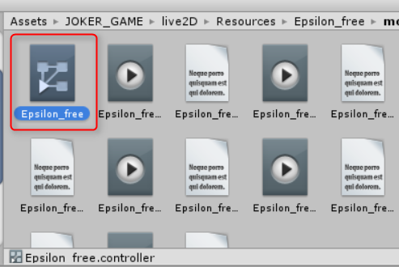
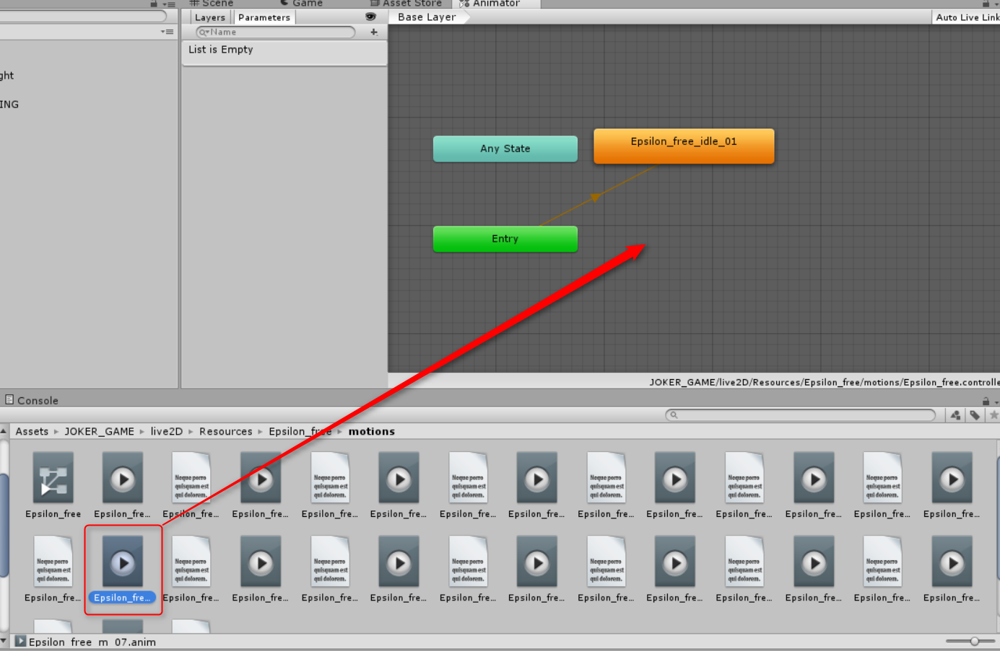
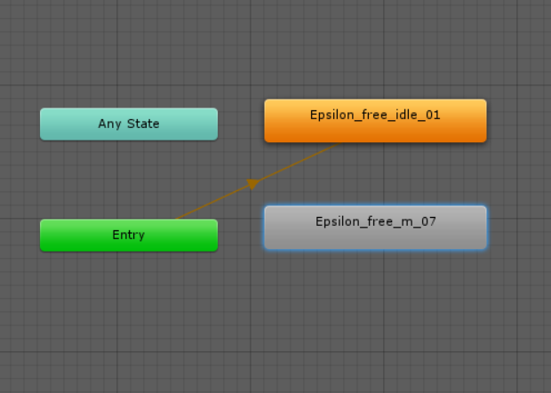
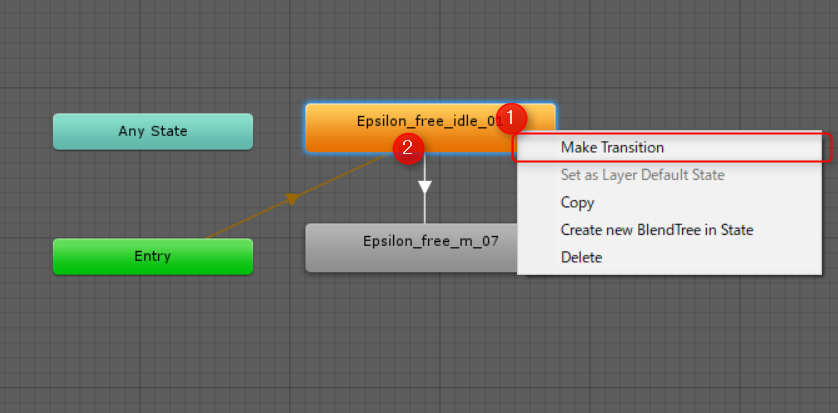
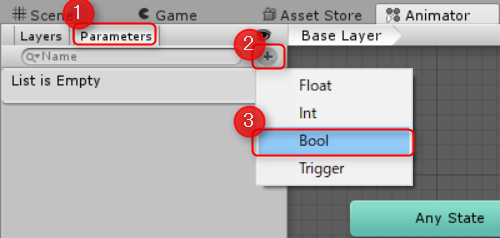
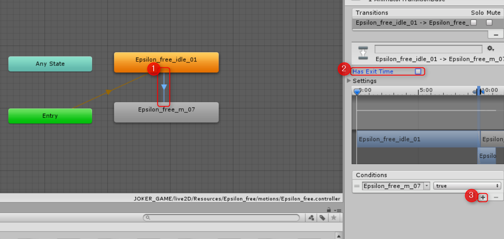

前回の作業で、イプシロンが登場するところまで作成しました。
ただ、今の状態だとアイドリングモーション1つだけで他のモーションに変更できません。
そのため、今回はほかのモーションに変更する設定を行いましょう
JOKER_GAME/live2d/Resources/Epsilon_free/motions/Epsilon_free.controllerをダブルクリックします。
タブルクリックすると、新しくAnimatorタブが現れます。
このEpsilon_free.controllerは、前回Epsilon_freeにモーションをドラッグ&ドロップされたときに自動的に作られたものです。

今回は、Epsilon_free_m_07.animを使用します
Epsilon_free.controllerと同じフォルダにあるEpsilon_free_m_07.animをAnimatorタブにドラッグ&ドロップします。

以下の画像のように新しいモーションが追加されます。

Epsilon_free_idle_01からEpsilon_free_m_07に状態を変更したいので、Epsilon_free_idle_01を右クリックして「MakeTransition」をクリックします。
するとEpsilon_free_idle_01から線が伸びるので、Epsilon_free_m_07をクリックして線を作ります。

次に、アニメーター左側にあるParametersタブをクリックし、その下段右側の＋ボタンを押します。そして、boolを選択します。
そうすると新しくパラメータが作成されるので、名前を「Epsilon_free_m_07」とします。

続いて、さきほど作った線をクリックし、Inspector上に表示されるHasExitTimeのチェックボックスを外します。
これにチェックが入ったままですと、即座にモーションが切り替わらないためです。
そして、Conditionsの＋ボタンを押し、設定を追加します。設定は画像と同じEpsilon_free_m_07をtrueにしてください。

これで、準備は完了です。以下のようにシナリオファイルを記述してください。
[live2d_new name="Epsilon_free" storage="Epsilon_free"]
[live2d_show name="Epsilon_free" ]
次にモーションが変わります[p]
[live2d_anim name=Epsilon_free state="Epsilon_free_m_07"]
[live2d_anim]タグはコンディションを切り替える処理を担当します。
[live2d_new name="Epsilon_free" storage="Epsilon_free"]
[live2d_show name="Epsilon_free" ]
次にモーションが変わります[p]
[live2d_anim name=Epsilon_free state="Epsilon_free_m_07"]
次にモーションを戻します[p]
[live2d_anim name=Epsilon_free state="Epsilon_free_m_07" condition=false]
無事にモーションがIdleモーションに切り替われば成功です。